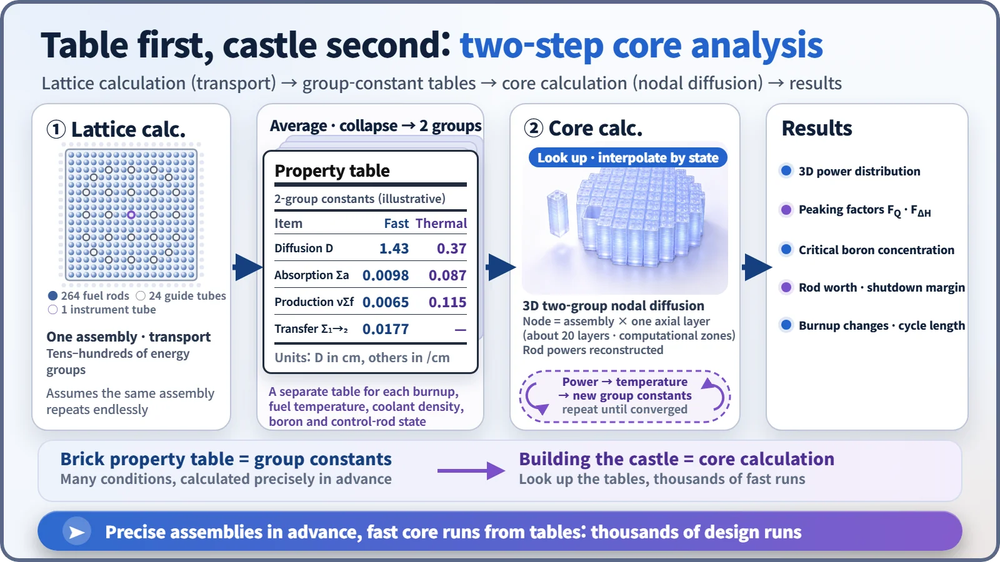
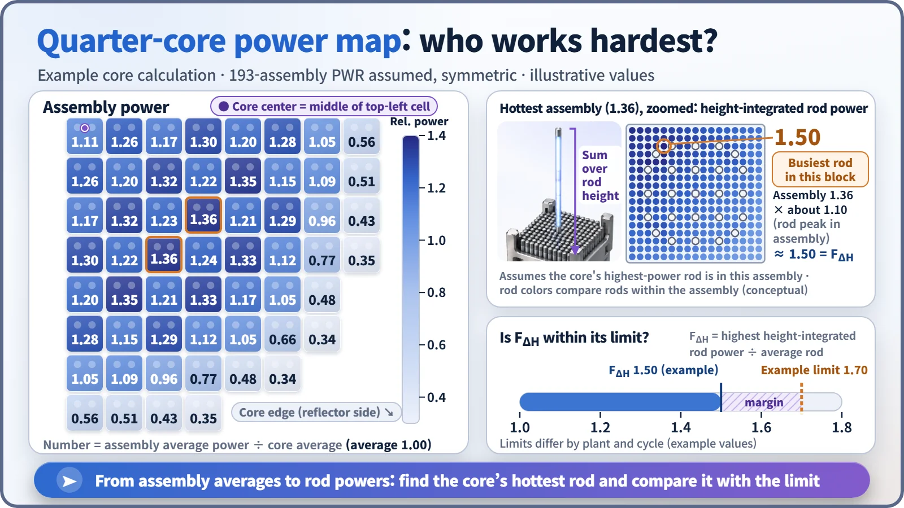

Modeling, Simulation & Computation · 265
Make the Brick Chart First, Then Build the Castle — What Core Analysis Codes Do
Rather than tracing all 50,000 fuel rods at once, core codes first characterize each assembly in detail, then assemble the core from those tables thousands of times.
Core analysis codes work in two steps: first a detailed transport calculation of one fuel assembly produces a table of "group constants," then a fast three-dimensional nodal calculation builds the whole core from those tables. The result is the power distribution, peaking factors, critical boron concentration and more, always checked against plant measurements. [1]
Why not calculate all 50,000 rods at once?
A large pressurized water reactor holds about 193 fuel assemblies (square bundles of fuel rods), each with 264 fuel rods: more than 50,000 rods in all. Drawing every rod exactly, with its fuel, metal tube and surrounding water, splitting neutron energies into dozens of steps and the height into dozens of layers, might be bearable once. But design work needs it thousands of times: for every candidate fuel layout, every step of burnup, every change in temperature. So the industry uses the two-step method of core analysis codes.
The toy-brick builder's trick
To work out the weight and strength of a big toy-brick castle, you wouldn't analyze every stud of every brick at once. You'd first measure each brick type and make a property chart, then pull values from it as you assemble: "a red 2×4 brick goes here."
① Lattice calculation: making the brick chart. One fuel assembly, assumed to repeat endlessly, is calculated in great detail with its real layout of rods and water, using a transport calculation that follows neutrons in every direction. The result is averaged over the assembly and collapsed to two energy groups, fast and thermal, giving a handful of numbers (how strongly it absorbs neutrons, how many it makes through fission, how easily they spread) called group constants.
② Core calculation: building the castle. The core is divided into assembly-sized blocks (nodes) and twenty-odd axial layers; each node looks up the group constants matching its own conditions, and the diffusion equation is solved in three dimensions. Large blocks and two energy groups make it fast. Finally, the in-assembly power shape stored with the constants is laid back over the result to recover the power of every fuel rod. [2]

Well-known pairings include CASMO and SIMULATE from Studsvik in Sweden, and PARAGON and ANC from Westinghouse. In South Korea, KARMA and ASTRA, developed by the Korea Atomic Energy Research Institute, were licensed in the 2010s and are used for South Korean pressurized water reactor core design. [3]
Why there are many property charts
Fuel bricks don't have fixed properties. Longer-burned fuel has less fissile material left; hotter fuel swallows more neutrons (the Doppler effect); warmer, thinner water slows neutrons less well; and dissolved boron and inserted control rods change the values too. So the lattice calculation is repeated across burnup, temperature, boron and control-rod conditions, building a table with many columns. The core calculation then computes each block's temperature, pulls matching values, corrects the power, and recalculates the temperature, trading results until neutron and temperature calculations agree.
Tracking pressure, temperature and flow as coolant circulates through pipes and pumps is the job of system thermal-hydraulic codes. In a core analysis code the stars are the neutrons and the power distribution; thermal hydraulics is only a simple supporting model.
The numbers on the report card
The calculation produces a three-dimensional power map of the core, showing how many times the average each assembly is working. Designers look first at the hottest spot.

Two power peaking factors come out of it. FQ is how many times the average heat generation occurs at a single point; FΔH is how many times the average rod's power one rod produces, summed over its height. A high FΔH means the coolant beside that rod heats up unusually strongly, so both have operating limits: in one US pressurized water reactor, for example, FQ is held to 2.50 and FΔH to 1.70. [4]
The largest number on the map is not FΔH: map values are assembly averages, and individual rods inside can run higher. If an assembly averages 1.36, its busiest rod may be around 1.5, which is why the code scans every rod in the core for the largest value. It also calculates the boron concentration that keeps the reactor exactly critical, how surely the control rods shut it down, and how many more months the fuel can be used.
Three places the code is put to work
Core design. At refueling, designers draw up candidate arrangements of new and used fuel and run the code on each, checking that peaking factors stay within limits and the reactor can run as long as planned. The code is the judge that scores each arrangement.
Input to safety analysis. Core properties such as control-rod effectiveness and how much power drops as temperature rises feed into accident analysis.
Operational support. At startup after refueling, predictions are compared with measurements, and during operation in-core detector measurements are compared with the calculation. In a typical review criterion at US plants, assemblies with relative power of 0.9 or more must agree within ±10%, and the root-mean-square difference over all assemblies must be 5% or less. [5]
Key takeaways
A core analysis code prepares a careful brick property chart once and rebuilds the castle from it thousands of times, and how that castle actually stands is always confirmed by measurement.